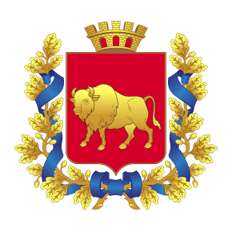

15 чэрвеня 2014 года міне ўжо 21 год з даты пачатку сучаснага
перыяду ў гісторыі беларускай адвакатуры — прыняцця і ўвядзення ў
дзеянне Закона Рэспублікі Беларусь «Аб адвакатуры» 15.06.1993
№ 2406–XII. Гэты прамежак часу ў гісторыі беларускай адвакатуры
добра вывучаны і прааналізаваны навукоўцамі-юрыстамі і самімі
адвакатамі, сёння гэты перыяд можна ўпэўнена назваць часам
станаўлення і развіцця сучаснай адвакатуры як прававога інстытута
Рэспублікі Беларусь, закліканага на прафесійнай аснове здзяйсняць
юрыдычную дапамогу ў мэтах ажыццяўлення і абароны правоў, свабодаў
і інтарэсаў грамадзян і юрыдычных асоб.
Але, здаецца, што да гэтага часу гісторыя паходжання адвакатуры
як важнага прававога інстытута беларускай дзяржавы з розных прычын
даследавана не так дасканала і мае шмат невядомых не толькі
беларускаму грамадству, але і самім адвакатам старонак. Нягледзячы
ні на публікацыі навукоўцаў, ні на агульную даступнасць
гістарычных дакументаў, гісторыя паходжання беларускай адвакатуры
яшчэ і сёння з’яўляецца маладаследаваным пытаннем. Можна сказаць,
што толькі астатнім часам у Беларусі пачалі з’яўляцца артыкулы
на згаданую вышэй тэму, і, у першую чаргу, дзякуючы намаганням
навукоўцаў Беларускага дзяржаўнага ўніверсытэта. Мэтай гэтага
артыкула з’яўляецца жаданне аўтараў высветліць у гісторыі Беларусі
дату, якую можна было б аб’ектыўна лічыць датай узнікнення
інстытута адвакатуры на беларускіх землях.
Так, даволі распаўсюджаным яшчэ і сёння з’яўляецца меркаванне,
што пачатак гісторыі беларускай адвакатуры трэба адлічваць
ад 26 чэрвеня 1922 года, калі сесія ЦВК БССР прыняла Палажэнне
аб адвакатуры Беларусі. Менавіта гэтую дату цягам некалькіх
десяцігоддзяў многія лічылі пачаткам беларускай адвакатуры, і
менавіта гэты дзень большасць беларускіх адвакатаў адзначае
як прафесійнае свята. Аднак, на думку аўтараў, дадзенае меркаванне
не з’яўляецца адзінамагчымым. Больш таго, падаецца справядлівым
адзначыць, што 26 чэрвеня 1922 года аб'ектыўна не можа з’яўляцца
датай ўзнікнення інстытута адвакатуры на беларускіх землях, бо і
да гэтай даты адвакатура як інстытут прафесійнага прадстаўніцтва
(пракуратары у Вялікім Княстве Літоўскім, прысяжныя павераныя
у Расейскай Імперыі) на беларускіх землях ужо існавала. На думку
аўтараў, ад гэтай даты можна лічыць пачатак толькі аднаго з этапаў
гісторыі беларускай адвакатуры — этапа развіцця беларускай
адвакатуры як часткі адвакатуры савецкай. Але і гэты чарговы этап
ужо закончыўся разам з гісторыяй СССР. Ад хвілі набыцця беларускай
краінай незалежнасці беларуская адвакатура знаходзіцца на новым
сучасным этапе свайго развіцця. Аднак, на думку аўтараў, ізноў
жа гэтая астатняя акалічнасць абсалютна не дае нам падстаў
да сцвярджэння, што гісторыя беларускай адвакатуры распачынаецца
менавіта ад дня прыняцця Вярхоўным Саветам БССР 27 ліпеня
1990 Дэкларацыі аб дзяржаўным суверэнітэце Беларускай ССР, альбо
ад дня прыняцця Закона Рэспублікі Беларусь 15 чэрвеня 1993 года
«Аб адвакатуры». Трэба зазначыць, што гэта быў толькі момант
перахода адвакатуры на чарговы этап развіцця, які адмысловым чынам
нічога ў гэтым прававым інстытуце не змяняў: сутнасцю адвакатуры
было і застаецца аказанне адвакатамі на прафесійнай аснове ў
парадку, прадугледжаным Законам, юрыдычнай дапамогі фізічным і
юрыдычным асобам, а таксама дзяржаве, ў мэтах ажыццяўлення і
абароны іх правоў, свабодаў і інтарэсаў, а таксама забеспячэння
доступу да правасуддзя. Таму такі ж самы падыход павінен быць і
да даты 26 чэрвеня 1922 г., якую нельга лічыць за дату паўстання
беларускай адвакатуры, якая, на думку аўтараў, сфарміравалася яшчэ
перад прыняццем першага Статута ВКЛ у 1529 годзе на падставе
Магдэбургскага права. Заканадаўчую ж аснову прафесійная адвакатура
Беларусі атрымала ў XVI ст. у Статуце ВКЛ (1529, 1566, 1588 гг.).
Статут Вялікага Княства Літоўскага, Рускага і Жамойцкага —
дзяржавы, палітыка-эканамічным цэнтрам якой былі сучасныя
беларускія землі быў уведзены ў дзеянне 29 верасня 1529 года.
Прыняцце Статуту стала вяршыняй прававой думкі і свядомасці ўсіх
народаў ВКЛ, але перадусім менавіта беларускага народа, які займаў
дамініруючую ролю ў гэтай дзяржаве, што пацвярдждае і той факт,
што афіцыйнай мовай ВКЛ была беларуская (старабеларуская), на якой
таксама і быў падрыхтаваны і прыняты Статут. З прыняццем Статуту
1529 г. ёсць усе падставы сцвярджаць, што на Беларусі было
завершана заканадаўчае афармленне інстытуту адвакатуры.
Так, першае заканадаўчае замацаванне права ўдзелу адваката ў
судовым працэсе было сфармулявана менавіта ў Статуце 1529 г.,
акрамя таго нормы Статута замацоўвалі спаборніцкі характар
судовага разбіральніцтва. Статут усталёўваў прынцып адзінства
права і судовага працэсу для ўсіх жыхароў Княства: ”иж
вси подданые наши, так вбогие, яко и богатые, которого раду колве
або стану были бы, ровно а одностайным тым писаным правом мають
сужоны быти» (арт. 9, р. 1). Непасрэдна аб адвакатах
(пракуратарах) згадвалася ў арт. 10 (О прокураторы) раздзела
6 Статуту 1529 г., які забараняў удзел чужаземцаў у якасці
адваката у справах ”о именя, о шкоды, о кгвалты». Такім чынам
Статут фактычна пацвердзіў датыхчасовае існаванне адвакатуры
на землях ВКЛ, у тым на землях сучаснай Беларусі. Датычыў
адвакатаў і арт. 9 раздзела 6 Статуту 1529 г., які хаця і
не успамінае ў сваім змесце аб «пракураторы», але рэгулюе прынцыпы
прадстаўніцтва стараны у працэсе, гэта значыць і пракуратора,
але і не толькі, бо ў той час акрамя адвакатаў-пракуратараў
прадстаўнікамі стараны ў судзе таксама выступалі і іншыя наёмныя
прадстаўнікі (дзякі, пісары, служэбнікі, шляхціцы, духоўныя асобы,
родзічы і сябры). Статут уступіў у сілу 29 верасня 1529 года і
дзейнічаў на землях сучаснай Беларусі на працягу больш чым трох
стагоддзяў, ажно да 1840 года, гэта значыць яшчэ больш
чым 40 гадоў пасля далучэння зямель ВКЛ да Расійская імперыі.
Прыняцце Статуту вызвала бурнае развіццё заканадаўства ВКЛ,
у тым і заканадаўства аб адвакатуры, у выніку чаго ўжо 11 сакавіка
1566 была зацверджана яго другая рэдакцыя. Статут 1566 г. змяшчаў
больш артыкулаў, чым першы Статут. Дзейнасці адвакатаў датычыла
непасрэдна ўжо 7 артыкулаў, а менавіта: артыкул 31 (“О
заступованью въ суду одному за другого»), артыкул 32 (“О злеценью
речы и отдаванью моцы инымъ за себе у права мовити»), артыкул 33
(“Хтобы самъ не могъ, або не умЂлъ у права мовити»), артыкул 34
(“О прокураторохъ, якіе мають быти и якихъ тежъ судъ маеть
пріймовати»), артыкул 35 (“О каранье фальшывыхъ и подступныхъ
прокураторовъ, и къ тому ижъ волно сторонЂ прокуратора своего
у права подперети, и самому мовити, и другого прокуратора
на его мЂстце установити»), артыкул 36 (“Причыны нестанья
прокураторовъ, ижъ то имъ и сторонамъ ихъ шкодити не маеть»),
артыкул 37 (“Чого прокураторъ безъ стороны своее справовати
не можеть»).
Так, Другі Статут 1566 г. досыць падрабязна рэгуляваў прафесійную
дзейнасць пракуратараў-адвакатаў, у тым ліку ён замацоўваў
прынцыпы адвакацкай этыкі і адвакацкай таямніцы.
Артыкул 33 Статуту 1566 г. забавязваў адвакатаў на падставе
рашэння суда да аказання бесплатнай прававой дапамогі асобам, якія
па прычынах, паданых у Статуце, не маглі прадстаўляць свае
інтарэсы ў судзе (“За се будеть повиненъ судъ зъ ураду дати
прокуратора, и дармо казати ему мовити отъ убогихъ сиротъ и вдовъ
немаетныхъ и тымъ тежъ, которыи бы або за пріязнью або тежъ
убозтвомъ своимъ прокуратора мЂти и сами речы своее
за недостаткомъ своимъ въ суду справовати не могли»).
Артыкул 34 Статуту 1566 г. і надалей забараняў чужаземцам
прадстаўляць інтарэсы на судзе, а таксама ўжо забараняў выступаць
у судзе ў якасці адвакатаў дзякам, пісарам і духоўным асобам (“А
судья подсудокъ и писаръ такъ тежъ и тые, которые только духовные
имЂнья держать, прокураторовать не мають»).
Параўнанне норм рэдакцый Статуту 1529 і 1566 г.г. дае падставы
сцвярджаць, што менавіта гэтым часам: паміж 1529 і 1566 гадамі ў
ВКЛ практычна сфарміраваўся і дасягнуў высокага ўзроўня інстытут
прафесійнага прадстаўніцтва — адвакатуры. У сваю чаргу Трэці
Статут 1588 г. удасканаліў некаторыя нормы, якія датычылі
дзейнасці адвакатуры.
Такім чынам, на думку аўтараў, днём утварэння інстытута адвакатуры
на сучасных землях Беларусі трэба лічыць 29 верасня 1529 года —
дзень прыняцця і ўвядзення ў дзеянне Першага Статуту ВКЛ,
палажэннямі якога ўпершыню на беларускіх землях было зацверджана
права грамадзян на прафесійнае прадстаўніцтва ў судзе.
Вячаслаў Церах, Дзмітрый Шылаў партнёры Адвакацкага бюро ”Церах,
Невядоўскі і Партнёры»
Белорусская Республиканская коллегия адвокатов
Брестская областная коллегия адвокатов
Витебская областная коллегия адвокатов
Гомельская областная коллегия адвокатов
Гродненская областная коллегия адвокатов
Минская городская коллегия адвокатов
Минская областная коллегия адвокатов
Могилевская областная коллегия адвокатов